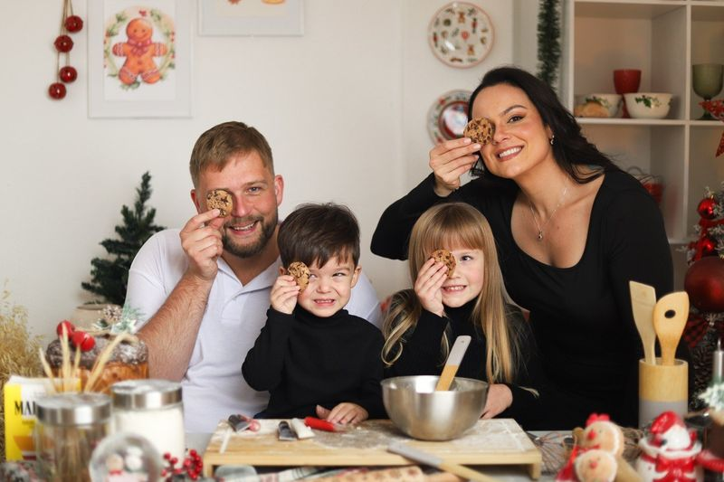
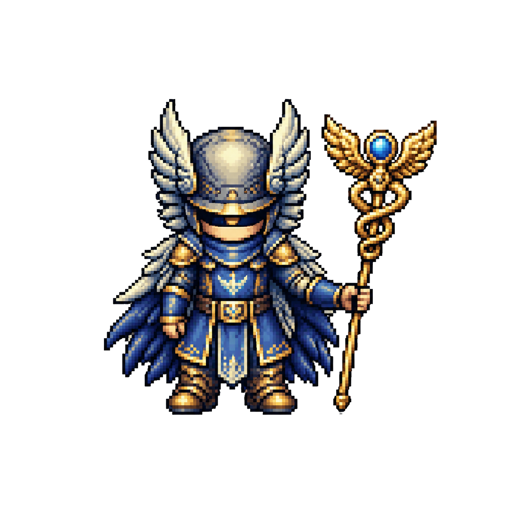

KI Stammtisch
KI-Assistenten im Beruf und Alltag
Was wirklich Zeit spart
Martin Mueller
martinmueller.dev · AWS Community Builder
Beruflich
Wo ich gerade herkomme
Bis Juli 2026
Air Canada
KI-Chatbot für den Kundenservice — conversational AI im Einsatz
Aktuell
HDI Versicherung
Cyber-Security-Versicherungsprodukt Cyquins — automatisiertes Risiko-Scoring
Intro
Wer bin ich?
Martin Müller — Freelancer, Vater, KI-Nutzer im Alltag
Was ich mache
- Freelancer · Softwareentwickler & KI-Agent-Builder
- OpenClaw seit Monaten im Alltag — Mail, Kalender, Rechnungen, Blog
- Security Engineering @ Prowler
- Gründer HalloCasa.com
- Vater von zwei Kindern · Portugal 🇵🇹
Warum dieser Talk
- KI jenseits von ChatGPT — Agenten, die Dinge erledigen
- AWS Community Builder seit 2022
- Speaker & Blogger über KI-Agenten
- Kein Verkaufspitch — echte Workflows, echte Pannen

Einstieg
Code schreiben mit KI? Klappt super.
Aber bei mir liegt der Mehrwert woanders.
- Beruflich und privat
- Nicht Chat-Fenster — sondern Agent, der Dinge erledigt
- Alles per Telegram oder Slack
Alltag
Was ich delegiere — und womit ich angefangen habe
Heute
Chronologie
- GitHub Issues → Plan → PR
- E-Mail — Kita, Steuerberater
- Morgen-Briefing — Cron 7:00
- Kalender — PDF → Events
- Rechnungen — höchster ROI
- Blog + CFP — aus Memory
- Telegram-Topics — ein Chat, viele Projekte
Aus Blogpost + 3-Monate-Update
Sprachnachricht → professionelle Mail
5 echte Beispiele — Familie bis Behörde
Beispiel 1 · Familie
Schwimmkurse — zwei Kinder, ein Anruf
An: kontakt@schwimmen-grabow.de
Anmeldung Schwimmkurse für zwei Kinder – nächstmögliche Termine
Sehr geehrte Damen und Herren,
Rebecca Müller, geb. 16.03.2020 → Seepferdchen-Kurs
Ravi Müller, geb. 18.10.2022 → Eltern-Kind oder Vorkurs?
Falls möglich: denselben oder aufeinanderfolgenden Kurszeiträumen — Termine, Gebühren, Anmeldung?
Telegram: „Schwimmkurs für beide Kids in Grabow“ → strukturierte Anfrage
Beispiel 2 · Kita
Rebecca — zwei Kitas, ein Problem
An: kita.parkviertel@ludwigslust.de
Eingewöhnung bis September?
Frau Kaiser — Platz ab September, aber kann Rebecca bis dahin zur Eingewöhnung kommen?
An: kita-st.helena@pfarrei-edith-stein.de
Mitteilung — Kindergartenplatz gefunden
Frau Banczyk — Platz ab September gefunden. Danke für Unterstützung, wir ziehen uns zurück.
Beispiel 3 · Alltag
Zwergensport — Kontakt aus iCloud
An: Constanze.Nick@zebef.de
Absage Zwergensport heute
Liebe Frau Nick,
wir können heute leider nicht zum Zwergensport kommen — noch in Athen, zeitlich nicht zurück.
Nächste Woche wieder dabei!
„Sag der Sportgruppenleiterin wir kommen heute nicht“ → Kontakt + höfliche Absage
Beispiel 4 · Behörde
iMSys Stadtwerke — Thread über Monate
An: netzbetrieb@stw-ludwigslust-grabow.de
Antrag iMSys – Schweriner Str. 6
Vorzeitige Ausstattung mit iMSys · Kundennummer 4033441 · PV 6,4 kWp geplant · TAB Nord?
Bitte: Kosten, technische Anforderungen, Einbautermin.
- → 15+ Mails im Thread: Portal-Token, Auftrag, Fernwärme, Nachfass
- Agent kennt Verlauf — kein „was war nochmal der Stand?“
Beispiel 5 · Freelance
Steuerberater — Kanzlei aus Kontakten
An: Kanzlei (aus iCloud CardDAV)
Terminumbuchung Steuerberatung
Sehr geehrte Damen und Herren,
ich muss unseren Termin umbuchen. Bitte schlagen Sie einen alternativen Termin in den nächsten zwei Wochen vor.
Mit freundlichen Grüßen — HTML-Signatur mit office@martinmueller.dev
„Schreib meinem Steuerberater, ich muss umbuchen“ — Blog
Mein Setup
OpenClaw in Produktion
Hostinger VPS → Gateway → Model Router → Tools — alles per Telegram oder Slack
Infrastruktur
Hostinger VPS + OpenClaw Gateway
Hostinger VPS
- Docker-Container, 24/7 in der EU
- Workspace auf persistentem Volume
- Git, gh, Cursor CLI auf dem Server
- ~5–10 EUR/Monat statt SaaS-Abo
OpenClaw Gateway
- Zentrale Runtime — Sessions, Cron, Skills
- Empfängt Telegram + Slack Events
- Startet Agent-Turns + Tool-Calls
openclaw gateway restartnach Config-Changes
Gateway = das Herzstück. Nicht der Browser-Tab — ein dauerhafter Prozess auf dem VPS.
Modelle
Model-Wahl + Cursor Custom Models
Default
Composer 2.5
Alltag, Heartbeats, schnelle Tasks
Planning
Opus (Thinking)
Architektur, komplexe Pläne
On demand
GPT, Gemini, Grok…
per /model oder Config
- Cursor CLI Provider — alle Cursor-Modelle als OpenClaw-Backend
- Implementierung:
cursor-agent --model composer-2.5für Code-Änderungen - Ein Abo (Cursor), viele Modelle — kein Vendor Lock-in pro Task
Kanäle
Telegram Topics + Slack mit Cofounder
Telegram Forum
Gruppe „Neo (bot work)" — ein Topic pro Projekt
- HalloCasa — Issues, PRs, Michael
- ai-secure — Marketing, Scans
- Meetups — Talks, CFPs
- Prowler — Rechnungen, Ops
- + weitere nach Bedarf
Slack #ai-neo
- Gemeinsamer Kanal mit Cofounder Michael
- Bot hört mit — kein @mention nötig
- Gespiegelt mit Telegram HalloCasa-Topic
- Slack für Team, Telegram für unterwegs
Ein Agent, getrennter Kontext pro Topic/Kanal
Security
Spektrum, nicht Schalter — meine Learnings
Auth & Secrets
- OAuth2 wo möglich — Google Kalender,
ghfür GitHub - AWS via Keys/SSO — nie in Config-Files
- Secrets in Env / Secret Refs, nicht Plaintext
- Gateway nur localhost — Tailscale wenn remote
Human-in-the-Loop
- Hard Rule: vor Senden fragen — Mail, Posts, Webhooks
- Tool Policy + Sandbox (
off/non-main/all) - Prompt Injection via Mail/Web — neues Threat Model
DevOps-Mentalität (Prowler / Security Engineering)
- IaC, Deployment Pipeline, Staging vor Prod
- Erfahrung gibt gute Schätzung: wie sicher ist mein Setup?
- Blast Radius begrenzen — Zugriff schrittweise erweitern
- Mehr in Blogpost (EN)
Warum OpenClaw bei mir gewinnt
- Agent der Dinge tut — nicht nur antwortet
- Erinnert sich an Kontext über Wochen
- Volle Kontrolle über Daten & Integrationen
- Open Source — du besitzt deinen Assistenten
Einordnung
Wo sitzen OpenClaw & Hermes?
LLM = Gehirn · Harness = Agent-Runtime · Tools = echte Welt
ChatGPT allein = LLM + Chat-UI. OpenClaw/Hermes = Harness mit Gedächtnis, Cron, Messenger, Freigaben.
Vergleich
Drei Ansätze, drei Trade-offs

Hermes
Details auf der nächsten Folie ↓
OpenClaw
Self-hosted VPS · Agent mit Gedächtnis · Mail, Kalender, Messenger
Kontrolle ↑ · Setup-Aufwand ↑
Hermes
Nous Research · self-hosted · Lern-Loop · persönlicher Assistent
Experimentell · weniger Integrationen
Langdock
Hosted · DSGVO-orientiert · Enterprise · Browser-Plattform
Convenience ↑ · weniger Autonomie
Die Achsen
- Kontrolle vs. Convenience
- Kosten vs. Setup-Aufwand
- „Agent der Dinge tut“ vs. „sichere KI-Plattform im Browser“
Ehrlich
Was schiefging
- Mail zu früh raus — Agent hatte „Entwurf“ als „senden“ verstanden
- Zu viel Autonomie ohne Freigabe-Schritt
- TODO: weitere echte Anekdoten
Was funktioniert
- Sprachnachricht → strukturierter Entwurf
- Morgen-Briefing: Mail + Kalender + Wetter
- Recherche mit Quellen, nicht nur Antwort
- Freigabe-Workflow vor allem, was rausgeht
Entscheidung
Wann lohnt sich Self-hosting?
✓ Lohnt sich
- Du willst Mail & Kalender anbinden
- Daten bleiben bei dir
- Agent soll proaktiv handeln
- Du nutzt es täglich
→ Eher hosted
- Nur gelegentliche Fragen
- Team / Compliance wichtiger
- Kein Setup-Zeitbudget
- Browser reicht
Fazit
Mein Takeaway
- KI jenseits von ChatGPT ist Alltag — nicht nur Coding
- Messenger als Interface schlägt Browser-Tab
- Gedächtnis + Integrationen = der eigentliche Mehrwert
- Start klein. Freigabe vor Senden. Dann erweitern.
Fragen?
Martin Mueller
martinmueller.dev
github.com/openclaw/openclaw
KI Stammtisch